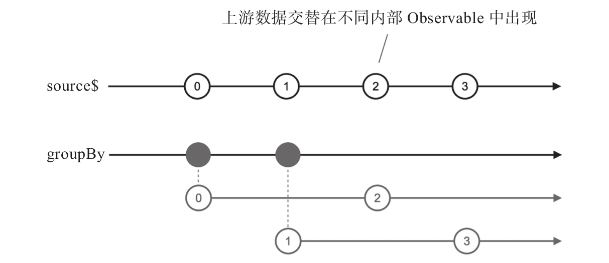

在有些场景下，需要对数据进行分组，根据数据的特点放到不同的Observable对象中，这样方便下游对不同的Observable对象区别处理。数据分组的过程和合并类操作符的工作正好相反，合并类操作符（比如merge）是把多个数据流合并为一个数据流，而数据分组是把一个数据流拆分为多个数据流。
回压控制类的操作符也提供数据分组的功能，比如window这个操作符，也是把上游的数据放到不同的内部Observable对象中，但是window传给一个数据流的总是连续的数据。实际情况中，需要分组的数据可能是交叉出现的，比如对于随机的整数序列，需要把奇数放在一个分组，把偶数放在另一个分组，这样window就是肯定做不到的。
为了支持数据分组，RxJS提供如下的操作符：
·groupBy
·partition
接下来就分别介绍这两个操作符。
1.groupBy
groupBy的输出是一个高阶Observable对象，每个内部Observable对象包含上游产生的满足某个条件的数据，即某个分组的数据。
可以把groupBy看作一个分发器，对于上游推送下来的任何数据，检查这个数据的key值，如果这个key值是第一次出现，就产生一个新的内部Observable对象，同时这个数据就是内部Observable对象的第一个数据；如果key值已经出现过，就直接把这个数据塞给对应的内部Observable对象。
至于一个数据的key值如何确定，由groupBy第一个函数参数来定制，下面是使用groupBy的示例代码：
const intervalStream$ = Observable.interval(1000); const groupByStream$ = intervalStream$.groupBy( x => x % 2 );
对应的弹珠图如图8-16所示。

图8-16 groupBy的弹珠图
在上面的例子中，groupBy的函数参数取的是参数除以2的余数，所以会产生两个key值：0和1。从弹珠图中可以看到，0和2属于第一个内部Observable对象，第一个内部Observable对象收纳所有key值为0的数据，1和3属于第二个内部Observable对象，因为它们对应的key值为1。
groupBy和回压控制类操作符有一个大区别就是，上游的数据可以交叉传递给下游的内部Observable对象，而对window和buffer来说，上游的数据肯定是连续地归属于下游的某个内部Observable对象或者数组，不会出现交叉的情况。
groupBy返回的高阶Observable中，每个内部Observable对象实际上是Grouped-Observable类型的实例，这个GroupedObservable类的实例对象有一个属性key，这个key属性的值就是分组的key值。
在网页应用中，可以用groupBy来对DOM事件进行分组，例如，我们需要对不同class的元素的点击事件做不同处理，HTML中可能包含下面的结构：
<button class="foo">Button One</button> <button class="foo">Button Two</button> <button class="bar">Button Three</button>
因为每一种class的元素可能都有多个，如果对每一个元素都用fromEvent获取一次数据流，那就太麻烦了。一个比较好的方法是利用DOM事件的冒泡功能，也就是对所有DOM元素的点击事件，同时也是对这些DOM元素的父元素的点击事件，也是父元素的父元素的点击事件，依次往上，当然也是对document的点击事件，于是，代码可以这么写：
const click$ = Rx.Observable.fromEvent(document, 'click'); const groupByClass$ = click$.groupBy(event => event.target.className); groupByClass$.filter(value => value.key === 'foo') .mergeAll() .subscribe(fooEventHandler); groupByClass$.filter(value => value.key === 'bar') .mergeAll() .subscribe(barEventHandler);
首先利用fromEvent获取整个网页所有的click事件数据流，然后，利用groupBy来对所有的事件进行分组，分组使用的key是事件的target.className属性，这个属性代表的就是被点击DOM元素的class，产生的groupByClass$就是根据class来分组的高阶Observable对象。
对于我们关心的class，利用filter就可以过滤掉不相关的数据流，但是过滤之后依然是一个高阶Observable，我们利用mergeAll把它变成一阶Observable，然后就可以像普通Observable对象一样处理了。
2.partition
对于很多具体问题，使用groupBy显得是牛刀杀鸡，比如上游数据是整数序列，需要把奇数和偶数分组处理，如果用groupBy的话，产生的高阶Observable中也无法确定第一个Observable是代表奇数还是第二个Observable是代表奇数，因为这完全取决于上游是先出现奇数还是偶数，而且，实际上我们只需要产生两个Observable对象，但是却不得不去处理一个高阶Observable对象。RxJS提供的partition就能简化这样问题的处理，对于需要把一个Observable对象分为两个Observable对象的操作，partition比groupBy更直观更易用。
partition接受一个判定函数作为参数，对上游的每个数据进行判定，满足条件的放一个Observable对象，不满足条件的放到另一个Observable对象，就这样一分二。有意思的是，partition是RxJS提供的操作符中唯一的不返回Observable对象的操作符，它返回的是一个数组，包含两个元素，第一个元素是容纳满足判定条件的Observable对象，第二个元素自然是不满足判定条件的Observable对象。
下面是使用partition的示例代码：
import {Observable} from 'rxjs/Observable';
import 'rxjs/add/observable/timer';
import 'rxjs/add/operator/partition';
const source$ = Observable.timer(0, 100);
const [even$, odd$] = source$.partition(x => x % 2 === 0);
even$.subscribe(value => console.log('even:', value));
odd$.subscribe(value => console.log('odd:', value));
其中，利用了ES6的语法把partition的返回值直接赋值给两个变量even$和odd$，even$包含上游所有的偶数数据，odd$包含所有的奇数数据；然后就可以对even$和odd$分别进行处理。
因为partition返回的结果不是Observable对象，所以如果把partition放在链式调用中会有点奇怪，代码会像是这样：
source$.partition(predicatFunc)[0].subscribe(...);
这段代码中只取了partition返回结果的第一个Observable对象，虽然像是一个链式调用，但是返回的第二个Observable对象也就丢了，如果不需要第二个Observable对象，那这个功能用map也可以实现。所以，使用partition一般也不会在后面直接使用链式调用，需要把结果用变量存储，然后分别处理结果中的两个Observable对象。